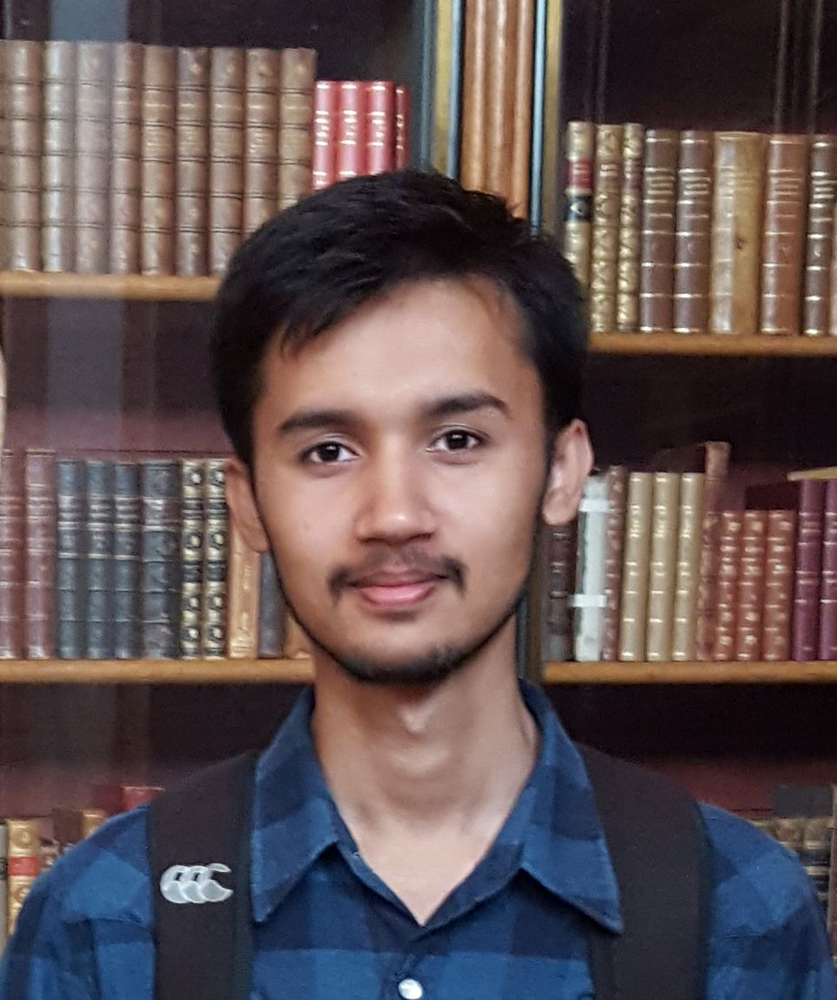

Rashid Talha
I study mathematics at the School of Natural Sciences (SNS), National University of Sciences and Technology (NUST) in Pakistan. Previously, I completed DipHE in mathematics and physics from the University of Warwick, UK.
While I broadly enjoy studying maths and physics, my main interests are gravitational physics and quantum field theories. I am working towards graduate and postgraduate level studies in theoretical physics, with an aim to explore differential geometry and specialise in the phenomenological aspects of QFTs in curved spacetime.
Some of my recent projects include:
- Analysis of the trajectories of multipole solutions of the 5th order mKdV equation in 1+1D. (With a faculty member)
- Feasibility study of auto-encoders and CNNs for fluid dynamic simulations of aortic blood flow. (With a faculty member)
- Efficient numerical generation of topologies on a finite set using Julia.